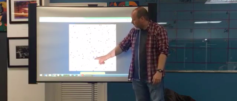

Data Analysis
As part of community outreach I gave a talk to members of Code#RGV:Brownsville.

Member of LIGO
I've been a member of LIGO for the past 6 years. In September 2015, the last predication of Albert Einstein's theory of General Relativity was confirmed with the successful direct detection of gravitational waves!

One more for good measure.
Cras justo odio, dapibus ac facilisis in, egestas eget quam. Donec id elit non mi porta gravida at eget metus. Nullam id dolor id nibh ultricies vehicula ut id elit.